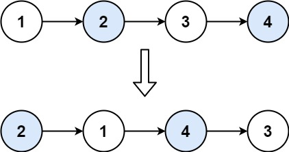

books / hot100 / 03-题解 / 07-链表
24. 两两交换链表中的节点
| 题目信息 | 内容 |
|---|---|
| 难度 | 中等 |
| 核心模式 | 虚拟头 + 局部重连 |
| 时间复杂度 | O(n) |
| 空间复杂度 | O(1) |
题目与约束
给你一个链表，两两交换其中相邻的节点，并返回交换后链表的头节点。你必须在不修改节点内部的值的情况下完成本题（即，只能进行节点交换）。
示例 1：

输入：head = [1,2,3,4]
输出：[2,1,4,3]
示例 2：
输入：head = []
输出：[]
示例 3：
输入：head = [1]
输出：[1]
提示：
- 链表中节点的数目在范围
[0, 100]内 0 <= Node.val <= 100
核心不变量
每轮保存下一组入口，再按固定顺序改三条指针。
完整推导
思路推导
-
直觉与痛点（只顾眼前的两人）：
假设链表是
1 -> 2 -> 3 -> 4。你想交换 1 和 2，你把 2 的next指向 1，1 的next指向 3。此时链表变成了2 -> 1 -> 3 -> 4。看起来成功了。接着你想交换 3 和 4。你让 4 指向 3，3 指向
null。痛点来了：1 本来指向 3 的，现在 3 跑到 4 后面去了，1 应该指向 4 才对啊！但是由于你在交换 3 和 4 的时候，找不到 1 了，导致链表在中间断裂！
-
破局思路（引入“前驱节点”作见证人）：
想要完美交换两个节点，我们必须站在它们前面的那个节点上。
这就又轮到我们的老朋友“虚拟头节点 (Dummy Node)”出场了。
- 构建
dummy -> 1 -> 2 -> 3 -> 4。 - 我们定义一个
prev指针，初始指向dummy。 - 每次循环，我们要操作的是
prev后面的两个节点：node1和node2。
- 构建
-
逻辑推演（致命四步曲）：
假设当前状态是
prev -> node1 -> node2 -> nextNode：- 步骤 1：让前驱节点拉住新的排头兵。
prev.next = node2。 - 步骤 2：让原来的排头兵拉住后面的大部队（防止断链）。
node1.next = node2.next。 - 步骤 3：让新的排头兵拉住原来的排头兵（完成反转）。
node2.next = node1。 - 步骤 4：前驱节点推进，准备下一轮。
prev = node1。
Java 实现（迭代法）
- 步骤 1：让前驱节点拉住新的排头兵。
/**
* Definition for singly-linked list.
* public class ListNode {
* int val;
* ListNode next;
* ListNode() {}
* ListNode(int val) { this.val = val; }
* ListNode(int val, ListNode next) { this.val = val; this.next = next; }
* }
*/
class Solution {
public ListNode swapPairs(ListNode head) {
// 1. 祭出虚拟头节点，化解头节点没有前驱的尴尬
ListNode dummy = new ListNode(-1);
dummy.next = head;
// prev 充当每对节点前面的那个“见证人”
ListNode prev = dummy;
// 2. 只有当 prev 后面至少还有两个节点时，才有资格进行“两两交换”
while (prev.next != null && prev.next.next != null) {
// 先用两个临时变量把要交换的两个兄弟提出来，看着清晰
ListNode node1 = prev.next;
ListNode node2 = prev.next.next;
// 3. 开始穿针引线（四步曲）
// 第一步：见证人牵手第二个人
prev.next = node2;
// 第二步：第一个人牵手第三个人（也就是第二个人后面的大部队）
node1.next = node2.next;
// 第三步：第二个人回头牵手第一个人
node2.next = node1;
// 第四步：见证人往前移动两位，也就是移到 node1 的位置，准备下一轮
prev = node1;
}
// 4. 返回真正的链表头节点
return dummy.next;
}
}
复杂度
- 时间复杂度：O(N)。其中 N 是链表的节点数量。我们需要遍历整个链表，每次处理两个节点。
- 空间复杂度：O(1)。我们仅仅用了几个节点指针，没有开辟任何额外空间。
易错点与扩展（面试连环追问）
-
面试追问：“你能用【递归】实现吗？代码能精简到几行？”
-
满分回答：递归的代码极其优雅！这道题本质上可以拆解为：“交换头部的两个节点” + “剩下的链表让递归函数去处理”。
-
神仙级递归代码：
class Solution {
public ListNode swapPairs(ListNode head) {
// 递归终止条件：如果没有节点，或者只有一个节点，直接返回不用交换
if (head == null || head.next == null) {
return head;
}
ListNode nextNode = head.next;
// 核心：把头节点指向【后面已经完成两两交换的子链表】
head.next = swapPairs(nextNode.next);
// 把第二个节点指向头节点
nextNode.next = head;
// 返回新的头节点（也就是原来的第二个节点）
return nextNode;
}
}
- 点评：虽然递归法空间复杂度会变成 O(N)（因为系统调用栈的开销），但这段代码体现了极强的“宏观思维”，面试官极其喜欢让你手写这段代码！